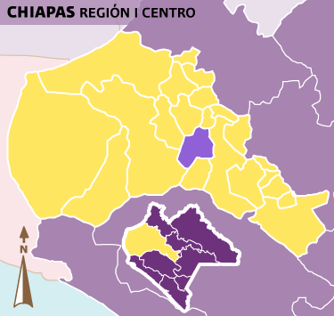
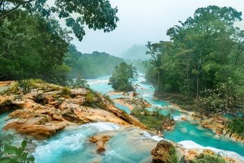

Historical Review
Tuxlta Gutierrez was founded by the Zoque Indians with the name Coyatoc "place, house or land of
rabbits".
The current name is derived from Nahuatl; in 1486 and 1505, the Aztecs invaded the region, destroyed
Coyatoc
and named it Tochtlán, which means the same; later the Spaniards castellanized this name calling it
Tuxtla.
In 1748 it appears as San Marcos Tuxtla; in 1768 it was the seat of the second mayor of Chiapas; on
October
29, 1813, the courts of Cadiz, Spain, elevated the town of Tuxtla to the category of villa; on July 27,
1829, it was elevated to the rank of city by the interim Governor Emeterio Pineda; In 1837, Tuxtla, in
the
division of the state, became the head of the western district; on May 31, 1848, the surname Gutierrez
was
added to the name of Tuxtla in honor of Don Joaquin Miguel Gutierrez, an illustrious federalist; on
August
11, 1892, Tuxtla Gutierrez was declared the seat of the public powers of Chiapas; in 1925, during the
government of Carlos A. Vidal, Tuxtla Gutierrez was declared the seat of public powers of Chiapas.
Vidal,
the City Hall disappears, becoming subject to a section of the government.
Localization

The municipality of Tuxtla Gutiérrez is located in the Central Depression with mountainous relief to the
south and north, its geographic coordinates are 16° 45" N and 93° 07" W.
It is bordered to the north by San Fernando and Osumacinta, to the east by Chiapa de Corzo, to the south
by Suchiapa and to the west by Ocozocoautla and Berriozábal.
What to visit in Chiapas?

Chiapas is a treasure in Mexico. Its gems of diverse tonalities are discovered in the red macaws that fly
in flocks over the jungle, in the crystalline spectacle of the water that rushes in thundering
waterfalls, in the turquoise blue that rests in placid lagoons or in the warm colors of the sunset
spread over endless beaches. These gems are also revealed in the detailed stone carvings of Mayan
stelae, in the enigmatic symbolism hidden in textiles or in the refined workmanship of an amber jewel.
The treasure of Chiapas is also found in the pleasure of tasting dishes that taste like centuries of
history or in the aroma of a steaming coffee from the millenary bean. No less valuable are the warm
hospitality of its people or the sonorous singing of the wood that comes from the marimba whose melodies
envelop the riches of the state. Chiapas is exciting...
Source:
mexico.viajando